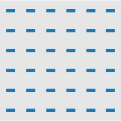
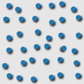

26 Data Visualization Fundamentals
We are about to embark on a wonderful journey into the world of data visualization. This chapter was not originally planned, but the more I thought about the importance of basic psychophysics concepts, their relationship to design, and data visualization, the more I felt compelled to include them (besides, having two chapters dedicated to color seemed excessive, so why not fully commit?).
Let’s start with a simple question: What is data visualization? Data visualization is the graphical representation of information and data. It sounds pretty simple and self-explanatory, right?
Next question: What are the goals of data visualization?
- Effective communication of information and insights
- Analysis and exploration
- Decision-making
It may sound obvious, but the complexity lies in how we achieve these goals. The main power of data visualization lies in its ability to present large, multidimensional datasets in a succinct, easy-to-consume form. Our memory has limits, as we can typically hold about 5±2 things in our heads at one time. Visuals can help us reduce and simplify information. For instance, if we have three numbers to present, it might be best to use a table (which, in my opinion, are underrated).
So, how do we reach the point where our visuals are aiding us and our audience in better understanding the data?
26.1 Perceptual Processing
To answer that question, we’ll start with how humans perceive the world, or more accurately, how our brains process visual information.
Why do we care about perceptual processing?
- It helps explain why some techniques work well and others do not.
- It informs us about the limits people have in terms of visual perception.
- It can support design decisions.
Visual perception occurs in two phases (similar to Daniel Kahneman’s systems 1 and 2):
-
Early, parallel detection of color, texture, shape, and spatial attributes:
- Involves the detection of orientation, color, texture, movement, etc.
- Engages arrays of neurons working in parallel.
- Occurs “automatically” and rapidly.
- Information is briefly held in iconic storage.
- Follows a bottom-up, data-driven model of processing.
- Often referred to as “pre-attentive” processing because it occurs without the direction of our conscious mind.
-
Serial processing of object identification (using memory) and spatial layout and action:
- Involves sequential processing.
- Splits into subsystems for object recognition and interaction with the environment.
- Evidence supports the independence of systems for symbolic object manipulation and for locomotion & action.
- The first subsystem interfaces with the verbal linguistic portion of the brain, while the second interfaces with motor systems that control muscle movements.
- Involves slow serial processing.
- Engages working and long-term memory.
- Follows a top-down processing model.
26.1.1 Pre-attentive Processing
Our main focus for now is system 1, as it is the system that “sees” and directs our attention. By catering to it, we can make our visuals more intuitive.
How does the human visual system analyze images? - Some things seem to be processed pre-attentively, without the need for focused attention. - This process generally takes less than 200-250 milliseconds (for reference, eye movements take about 200 milliseconds). - It seems to be handled in parallel by the low-level vision system.
Let’s consider an example with a number wall:
| 1 | 2 | 7 | 9 | 8 | 3 |
| 5 | 6 | 4 | 1 | 7 | 9 |
| 6 | 7 | 4 | 2 | 3 | 6 |
| 2 | 7 | 5 | 7 | 9 | 0 |
| 1 | 3 | 8 | 5 | 8 | 3 |
| 2 | 0 | 0 | 3 | 7 | 4 |
Now, with highlights, finding the number 2 becomes much faster, doesn’t it?
| 1 | 2 | 7 | 9 | 8 | 3 |
| 5 | 6 | 4 | 1 | 7 | 9 |
| 6 | 7 | 4 | 2 | 3 | 6 |
| 2 | 7 | 5 | 7 | 9 | 0 |
| 1 | 3 | 8 | 5 | 8 | 3 |
| 2 | 0 | 0 | 3 | 7 | 4 |
What kinds of tasks can the pre-attentive system perform? - Target detection: Users rapidly and accurately detect the presence or absence of a “target” element with a unique visual feature within a field of distractor elements. - Boundary detection: Users rapidly and accurately detect a texture boundary between two groups of elements, where all the elements in each group have a common visual property. - Region tracking: Users track one or more elements with a unique visual feature as they move in time and space. - Counting and estimation: Users count or estimate the number of elements with a unique visual feature.
Example: Can you rapidly detect the presence of a red circle?
Pre-attentive processing allows our visual system to rapidly and accurately detect limited visual properties before we are consciously aware of them:
We can easily identify the presence or absence of a target within a visual field.
We can effortlessly detect a texture boundary between two groups of elements.
We can smoothly track an element with a unique visual feature as it moves through space and time.
Here are some types of preattentive processing we can perform:






We struggle to have multiple categories 26.1.1.1 Feature Hierarchy
Multiple features such as color and shape can represent multiple types of data in a single image. But, it’s important to make sure that these visual features don’t mix up and hide the data we want to show. Think of it like trying to find a red apple in a bowl full of green apples – it’s easy because the color stands out.
Sometimes, our eyes like one visual feature more than another. For example, when we’re looking at shapes, colors can be distracting and make it harder to see the shape patterns. But, if the colors are all the same, the shapes stand out clearly. We struggle to perceive more then two categories. Try to find the groups of points below, which groups do you spot first?

Check out more and play the game here: https://www.csc2.ncsu.edu/faculty/healey/PP/#jscript_search
So, when we’re deciding how to visually represent our data, we should pick the features that make the most important information stand out. This way, we avoid hiding the data we want to show.
Common ways to visually encode numbers in order from most easily perceived to least:
- position along a common scale, axis, and baseline
- position along non-aligned axes
- Length, direction, angles of relative lines/ slope
- Area
- Volume, curvature, arcs / angles within a shape
- Color or shading
26.1.1.2 Integral vs Separable
Can you develp a set of unique symbols that can be placed on a display and be rapidly recieved and differentiated? If we talked privously about picking a number off a visual depiction and match the intended encoded number, here we talk whether they can be rapidly percieved and differentiated from each other.
Suppose that we use two different visual properties to encode two different variables in a discrete dataset (one is easy, three is hard): - color, size, share, lightness
Will the two different properies interact so that they are more/less difficult to untangle? - Integral - two properies are viewed holistically - Separable - judge each dimension independently
26.1.1.3 Nonlinear Perception
Perception is not uniformly linear. There are some things we perceive accurately, such as length, while there are others that we tend to underestimate, such as the true difference between two values due to our ability to sense ratios.
For example, you are pretty good at estimating lengths and temperatures after a little practice. However, in some domains, we tend to underestimate differences and miss the ratios. Our perception adjusts to the strength of the signal; for instance, our eyes adjust to bright daylight and to darkness in a room.
Visualization is about turning numbers into pictures. However, the goal is for the user to be able to translate these pictures back into numbers accurately.
One tricky task in visualization is translating numbers into areas. This is not only difficult to decipher but also to encode. What are we comparing when we look at areas—radius, area, or sensation?
Let’s consider an example. If you have three red circles and one green circle, which red circle represents a number that is twice as big as the green one?
Funny enough, all three are correct! The second circle has twice the area of the original, the third circle appears to have twice the area according to Stevens’ Law (which we will discuss shortly), and the fourth circle has twice the radius. Yes, it is indeed confusing! The way we perceive proportional differences in sensation is not a one-to-one relationship with the measurement.
Our goal in data visualization is to transform visuals into numbers in a way that makes it easy for the reader to understand.
Now, let’s talk about Stevens’ power law. Stevens was interested in this exact question and formulated Stevens’ Law in 1960.
\[ s(x) = ax^{b} \tag{26.1}\]
\(s\) is sensation \(x\) is intensity of the attribute \(a\) is a multiplicative constant \(b\) is the power
\(b > 1\): overestimate;
\(b < 1\): underestimate
Experimental results for (b), the exponent in Stevens’ Law, range from 0.9 to 1.1 for lengths, 0.6 to 0.9 for area, and 0.5 to 0.8 for volume. As a rule of thumb, (b ).
So, how would we apply this apparent scaling in practice? Let’s consider an example where we want to draw circles of different areas. Imagine the largest circle has an area twelve times bigger than the smallest one. To counteract our tendency to underestimate, we could increase the area by approximately (). However, it’s important to consider the context and whether these adjustments will truly benefit your visualization. Nonetheless, if you were to make these adjustments, this is how you would do it.
Turning color into numbers is complicated, as it is affected by a myriad of factors, from lighting to individual perception. For example, consider the chess pieces in the image below. Do they appear to be the same color?
Despite appearances, they are actually the exact same color!
Purposes of Using Color:
- Call attention to specific data points
- Enhance appeal and memorability
- Represent discrete categories
When using color:
- Opt for pastel shades.
- Avoid high saturation.
- Be mindful of spectral colors as they can cause afterimages.
- Utilize color for grouping and searching.
26.1.1.4 Gestalt Principles
Gestalt Principles explain how the human brain perceives visual patterns from grouped elements. These principles encompass concepts like proximity, similarity, continuity, closure, connection, and enclosure.
Proximity: When objects are close together, we often perceive them as a group
Similarity: When objects share similar attributes (color, shape, etc.), we often perceive them as a group
Enclosure: When objects are surrounded by a boundary, we often perceive them as a group
Closure: Sometimes partially open structures can still be perceived as a grouping metaphor (e.g., “[…]”)
Connectivity: When you draw curves or lines through data elements, this is often perceived as creating a connection between them
26.1.2 Visual Encoding
After learning about the basics of how our eyes and brain quickly process visuals, it’s time to delve into visual encoding, which is about turning data into visuals that are easy to understand.
We need to tackle when visually encoding information we need to tackle the following taks:
- Turning numeric data into visuals
- Turning categorical data into visuals
- Showing the differences between pieces of information
- Showing how data or information relates to some context
Humans have different types of memory like long-term, working, verbal, and visual memory, each stored in various parts of the brain. Our working memory, which temporarily holds information, can only keep around three chunks of information at a time. Visualizations can help group or “chunk” information together, making it easier for us to process and remember.
It’s essential to keep related information close together in a visualization to avoid fragmentation, which is when we separate things that should be remembered together. By doing this, we help people remember and understand the information better. We can highlight or annotate important points to draw attention to them.
Good design in visualizations helps people quickly understand what they’re looking at. It’s not about just putting numbers into shapes, but making those shapes tell a story. A well-designed visualization will help people easily scan through the information and also delve deeper if they want to.
The goal is to make it easy for the reader to decode the visual information without making errors.
Different visual attributes like position, length, angle, or color help represent data. Some attributes, like position and length, are better for showing precise data, while others like color or size are less precise. It’s crucial to match the right attribute with the type of data we’re showing.
Using familiar chart types, intuitive colors, and shapes help make the visualization easy to understand. Avoid making people remember too many new symbols or having large legends, as it can be overwhelming.
Lastly, knowing who will be looking at the visualization will inform your decisions resulting in visuals that are easy to understand, remember, and interpret.
26.2 Evaluating your Graphs
How do we evaluate our graphics to enlighten and engage our audience, rather than deceive them? Several practical frameworks have been proposed for this purpose.
26.2.1 Data Ink Ratio (Tufte 2001):
Tufte, Edward R. 2001. The Visual Display of Quantitative Information. 2nd ed. Cheshire, Conn: Graphics Press.
One of the popular ideas in data visualization is the Data-ink ratio, introduced by Edward Tufte. This idea is all about keeping things simple and getting rid of any extras that don’t help convey the main message. As Tufte suggests, it’s good to “erase non-data-ink, within reason” and “erase redundant data-ink, within reason.” It might be tempting to remove too much, but it’s better to take it slow. Trust your gut feeling on whether the chart still makes sense. The suggestions we’ll discuss next are based on having clean and clear graphics.
26.2.2 Levers of Chart-Making (Ware 2021):
Ware, Colin. 2021. Information Visualization: Perception for Design. Fourth edition. Cambridge, MA: Morgan Kaufmann, Inc.
- Speed to primary insight: How fast the audience can extract insight from a graph.
- Granularity: The level of detail in the data shown in a chart.
- Explore or explain: Whether the visualization allows users to explore the data themselves or is accompanied by an explanation.
- Dry or emotional: The seriousness or informality of the data presentation. We can make presentation more emotional to attract less data savvy audience.
- Ambiguity vs. accuracy: The balance between clear accuracy and intended ambiguity in the chart.
26.2.3 Cognitive Load (Sibinga and Waldron 2021):
Sibinga, Eva, and Erin Waldron. 2021. “Cognitive Load as a Guide: 12 Spectrums to Improve Your Data Visualizations | Nightingale.” https://nightingaledvs.com/cognitive-load-as-a-guide-12-spectrums-to-improve-your-data-visualizations/.
This framework is divided into three categories:
- Intrinsic load: Concerned with the complexity of the data itself.
- Measurement: The type of data (quantitative vs. qualitative).
- Knowability: The certainty of the data (certain vs. uncertain).
- Specificity: The clarity of data categories (precise vs. ambiguous).
- Relatability: How relatable the data is to everyday life (concrete vs. abstract).
- Germane load: Concerned with the audience’s readiness to process the information.
- Connection: How the audience first encounters the visualization (intentional vs. coincidental).
- Pace: The time the audience has to view the visualization (slow vs. fast).
- Knowledge: The audience’s familiarity with the subject (expert vs. novice).
- Confidence: The audience’s familiarity with the data reporting format (confident vs. anxious).
- Extraneous load: Concerned with how new information is presented.
- Chart type: The commonality of the chart type (common vs. rare).
- Interpretation: The precision of the chart’s values (accurate vs. approximate).
- Composition: The density of information on the page (concise vs. detailed).
- Delivery: Whether the data report is self-explanatory or requires exploration (explanatory vs. exploratory).
No framework is likely to replace the others; instead, they complement each other to cover the vast territory of the data visualization domain. Data-ink ratio principles remain a good starting point for most business contexts, but considering emerging frameworks can make the practice more nuanced for tackling different needs, messages, and audiences. The final determinant of how to incorporate the three frameworks will depend on the context of the visualization, with a clear understanding of the audience, the message, and the medium being key.
Finally, the most tried and true method of testing graphics is asking others to have a look at it!